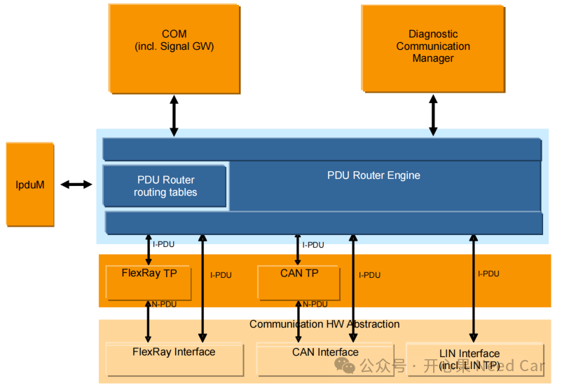
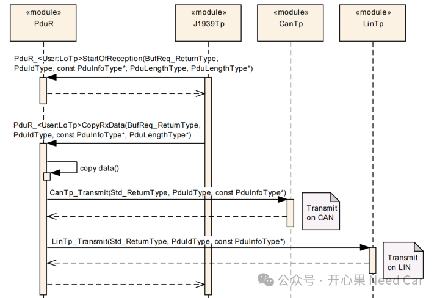
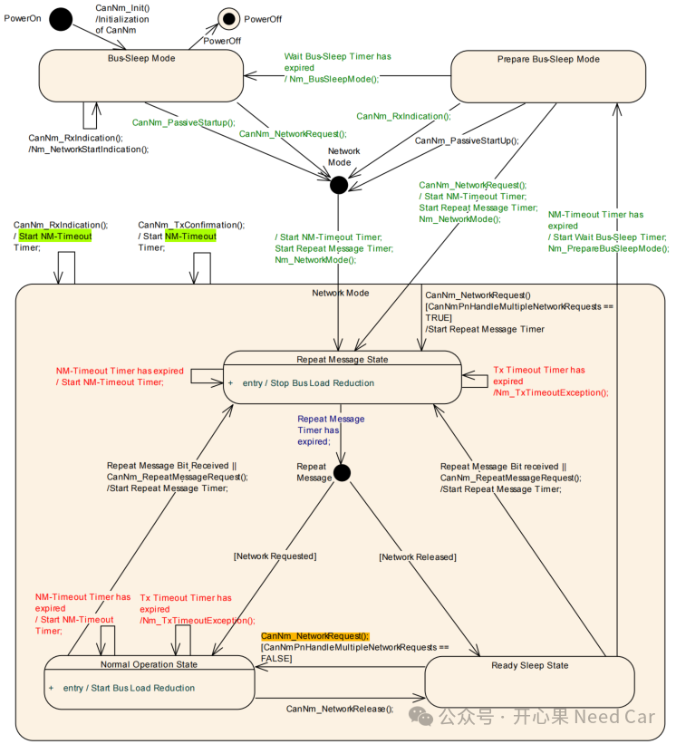

开心果 Need Car · 2025-07-04T06:32:00+08:00 · 微信原文
继续CP Autosar面试话题系列。
Q1：一对（request/response）诊断报文如果不配置到Dcm模块，该如何配置？（CanTp --> PudR --> CDD），需要手动实现哪几个callout函数？
A1：PduR承载着数据路由的任务，具体的路由路径如下所示：

如果诊断数据不路由给DCM（Diagnostic Communication Manager），自然让我们想到网关控制器，很多时候，网关控制器会将上位机发送的诊断报文路由给下游的终端节点或者CDD（Complex Device Driver，复杂设备驱动模块）。如下示意：某路CAN接收到J1939诊断报文，路由到另一路CAN以及Lin，需要用到的接口如下所示：

具体会使用到的接口，如下所示：
PduR_<User:LoTp>CopyRxData()
PduR_<User:LoTp>RxIndication()
PduR_<User:LoTp>StartOfReception()
PduR_<User:LoTp>CopyTxData()
PduR_<User:LoTp>TxConfirmation()
Q2：什么是Signal Group, 什么场景下要用Signal group?
A2：简单理解就是由多个Signals构成的一个信息集合。eg：功能安全中的E2E功能会使用Signal group。
Q3：一般0x28服务通过哪两个Com函数停止/开始PDU报文的收发？
A3：Autosar 4.4中，Com_IpduGroupStart()/Com_IpduGroupStop()
在Autosar4.2中，则使用接口Com_IpduGroupControl()。
Q4：Lin数据是由LinIf模块的调度表周期发送的，那么Com模块怎么控制所有Lin报文的PDU的停止和发送了？
A4：Com模块可以通过调用LinIf的接口，eg：LinIf_ScheduleRequest()，来动态启用或禁用某个调度表，注意，该接口由Master Lin调用。
Q5：CanNm的状态机有哪三大三小的模式和状态？
A5：CanNM的模式（三大）和状态机（三小）包括：Network Mode（Repeat Message State、Normal Operation State、Ready Sleep State）、Prepare Bus-Sleep Mode、Bus-Sleep Mode。

Q6：每个状态下有什么特殊的动作或者属性，比如Repeat message需要快发或者慢发报文。
A6：每个CAN网络的Mode或者CAN网络的State的动作可以参看上图的状态机。这里想补充一些容易忽略的信息，具体信息可以参考《Autosar网络管理：CanNM网络状态机真的全看懂了？》、《Autosar网络管理：主动唤醒源/被动唤醒源与网络主动唤醒/被动唤醒的关系》等。
Q7：谁来触发CanNm状态机跳转，什么条件下触发？
A7：CanNm的状态转移是网络状态接口调用后的结果，网络状态接口：CanNm_NetworkRequest()/CanNm_PassiveStartUp()。但是，接口被调用，是因为网络相关定时器超时或者唤醒源触发。涉及的定时器有：CANNM_TIMEOUT_TIME、CANNM_WAIT_BUS_SLEEP_TIME、CANNM_REPEAT_MESSAGE_TIME等。当然，如果使用PN（Partial Network，局部网络）功能，PN相关定时器也会触发网络状态转移。
Q8：CanNm怎么知道是主动唤醒还是被动唤醒？
A8：如果从调用CanNM接口的角度考虑，调用CanNm_PassiveStartUp()表示被动唤醒，调用CanNm_NetworkRequest()表示主动唤醒。如果从识别唤醒源的角度考虑， Can Transceiver或者Can Controller方式的唤醒属于被动唤醒，硬线（eg：KL15）或者电源相关的唤醒属于主动唤醒。
Q9：说下主动唤醒和被动唤醒的具体流程（从唤醒源开始讲起）
A9：参考前文《Autosar网络管理：节点收到NM Msg，是如何被动唤醒的？》
Q10：ECU休眠状态下如何通过诊断报文唤醒ECU且唤醒网络，是主动唤醒还是被动唤醒，为什么？
A10：被动唤醒。等同如上收到网络管理报文流程。
Q11：网关产品，那么多路NM，可能很多问题都不是我们的问题，如何快速排查证明自己没有问题？
A11：这是一个开放性的问题，可以任意发挥。这里补充的是：任何问题的排查需要数据，所以获取问题数据，进行分析是第一步。如果拿不到问题数据，尽可能的贴合当时问题发生的工况去复现问题。
往期精彩回顾